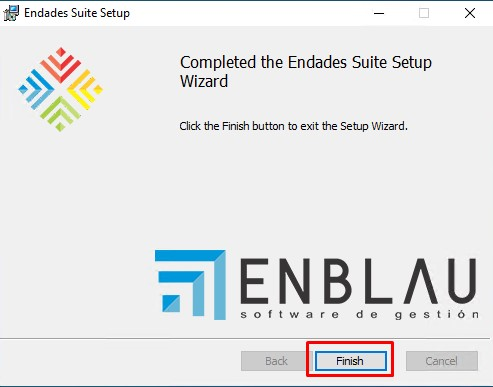

Actualización ENBLAU
1. Introducción
Este manual está diseñado para orientar a los usuarios en el proceso de actualización de ENBLAU a la última versión disponible.
2. Pasos para la actualización
⚠️ ¡Importante! Antes de comenzar, asegúrate de que ningún usuario esté conectado a ENBLAU. Desde Herramientas administrativas - Administración de equipos - Carpetas compartidas - Archivos abiertos podrás averiguar si hay alguien conectado a la app.


Si ENBLAU está instalado en un servidor, la actualización debe realizarse desde ese servidor y nunca desde un equipo conectado por unidad de red.
2.1. ENBLAU
- Accede a ENBLAU (desde el servidor, si aplica).
- En la parte inferior de la pantalla de inicio, haz clic en "Nueva versión disponible" (aparecerá en rojo junto con el número de la última versión disponible).

- Se abrirá una ventana llamada "Nueva versión", donde podrás ver las novedades antes de instalar. Haz clic en el botón "Abrir enUPDATE" para continuar.

2.2. enUPDATE
- Al abrir enUPDATE desde ENBLAU, se mostrará la ventana correspondiente. Ese proceso se puede hacer directamente desde enUPDATE sin la necesidad de abrir primero ENBLAU.
- En la parte superior de la cinta, haz clic en "Descargar e instalar". Esto descargará automáticamente la última versión de ENBLAU (podrás ver el progreso en la barra).

- Al finalizar la descarga, aparecerá un mensaje confirmando que fue exitosa y solicitando permiso para proceder con la instalación.

2.3. Instalación
⚠️ ¡Importante! Asegúrate de que ENBLAU esté completamente cerrado antes de comenzar la instalación.
-
Al confirmar la instalación, se abrirá la ventana del Endades Suite Setup. Sigue los pasos a continuación:

-
Acepta los términos de la licencia marcando la casilla correspondiente y continúa.

-
Verifica que la ruta de instalación de ENBLAU sea la correcta.

-
Haz clic en "Instalar" para comenzar.

-
Finaliza la instalación.

2.4. Actualización de la base de datos
- Una vez finalizada la instalación, abre ENBLAU desde el equipo donde realizaste la actualización.
- Al iniciar, el sistema solicitará actualizar la base de datos. Haz clic en "Sí" para continuar.

¡Listo! Ya puedes trabajar con la última versión actualizada de ENBLAU.
3. Desinstalar e instalar ENBLAU
En caso de que la actualización de ENBLAU no se haya completado correctamente —por ejemplo, si había usuarios conectados o se produjo algún otro error— será necesario desinstalar el programa por completo y realizar una nueva instalación.
3.1. Desinstalar Endades Suite
- En el equipo donde está instalado ENBLAU, abre el menú de inicio de Windows y busca "Agregar o quitar programas" (el nombre puede variar según la versión del sistema operativo).

-
Se abrirá la ventana de configuración. En el apartado Aplicaciones y características, busca Endades Suite.
-
Haz clic sobre la aplicación y selecciona Desinstalar. El procedimiento es el habitual para cualquier aplicación instalada en Windows.


3.2. Instalar ENBLAU
-
Una vez desinstalada la aplicación, accede a la carpeta de instalación de ENBLAU. Por ejemplo:
C:\ENBLAU -
Dentro de esa carpeta, abre el directorio Downloads.

- Ahí encontrarás varias versiones del instalador. Puedes ordenar los archivos por nombre o por fecha para localizar la última versión disponible.

- Abre la carpeta correspondiente a la última versión y ejecuta el archivo
Installer.msihaciendo doble clic.

- Se abrirá la ventana del instalador Endades Suite Setup. Sigue los mismos pasos detallados en la sección 2.3. Instalación.
üìå Nota: Si despu√©s de reinstalar ENBLAU el sistema solicita actualizar la base de datos, sigue el procedimiento indicado en 2.4. Actualizaci√≥n de la base de datos.
 Español
Español
 English
English
 Italiano
Italiano
 Português
Português